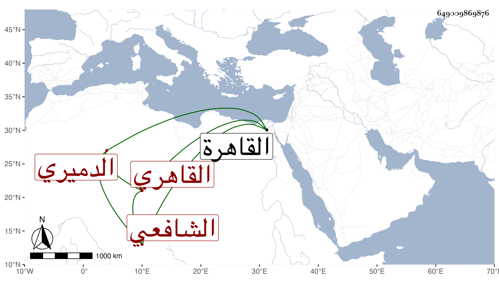

0902Sakhawi.DawLamic.ITO20230111-ara1.EIS1600.649009869876
Biography ID: 649009869876
150
علي بن يوسف بن علي بن خلف بن محمد بن أحمد بن سلطان نور الدين ابن الجمال الدميري الأصل القاهري الشافعي أخو البدر محمد الآتي وأبوهما ويعرف بالدميري . ولد فيما بلغني سنة ثمان عشرة وثمانمائة بالقاهرة ونشأ فحفظ القرآن وغيره واشتغل يسيرا وسمع على الشمس الشامي والزركشي وشيخنا في آخرين ومن ذلك جميع البخاري في الظاهرية القديمة وعلى عبد الكافي بن الذهبي ونحوه وتكسب بالشهادة وترقى فيها بحيث صار أحد أعيان الموقعين وتمول وناب في القضاء وكان من موقعي الدست وممن باشر في جهات ، وحج غير مرة آخرها مع الرجبية المزهرية ولم يكن به بأس بالنسبة لأخيه . مات في ربيع الآخر سنة اثنتين وثمانين عفا الله عنه وله ولد من سيآت الدهر وإن كان قد أسمعه البخاري في الظاهرية وغيره .
